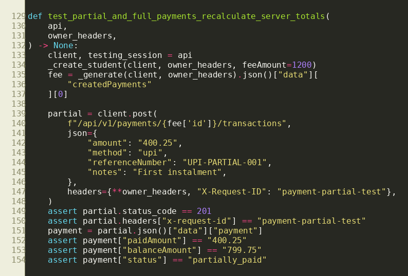
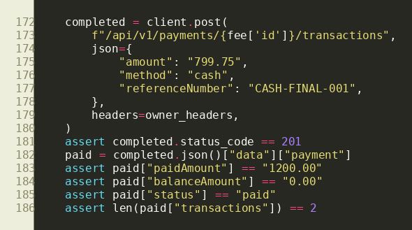
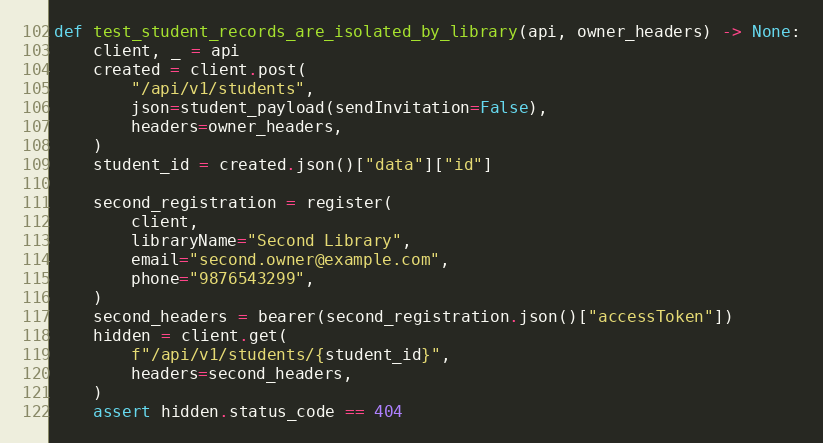
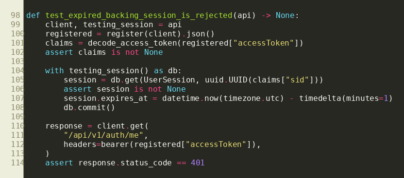

Project: Community Services Platform System: Smart Library Management System Team: MAY2026-Team-021 Submission date: 2 August 2026
Team Members
Shubham Nagar (21f3000093)
Gaurav Ramesh Ghodge (22f2000467)
Piyush Jha (21f1002373)
Mandeep (23f2001951)
Hitarth Mehta (23f1001948)
1. Sprint Summary
Sprint 1 replaced the frontend-only mock foundation with working FastAPI,
SQLAlchemy, JWT, tenant isolation, and PostgreSQL-compatible domain APIs.
The result is an integrated owner workflow for registering a library,
managing students and physical resources, allocating seats, recording fees,
publishing announcements, and viewing operational reports.
74documented API operations
133 passedbackend pytest cases in the final run
87backend application Python files
26backend test modules
Sprint goals
Establish a secure authentication, role, tenant, error, and API-contract foundation.
Implement owner-facing core library, seat-allocation, payment, and announcement workflows.
Integrate completed frontend services with real APIs without changing the page/store/service architecture.
Protect historical records, prevent cross-library access, and test positive and negative paths.
Generate a Swagger-compatible YAML contract with operation descriptions, errors, and user-story mapping.
Final technical baseline
FastAPI routes use Pydantic schemas, service rules, tenant-scoped repositories, and SQLAlchemy models.
Passwords use salted scrypt hashes. Access tokens are JWTs and refresh sessions rotate and are revocable.
Every expected API error uses a structured code/message/details envelope and includes an X-Request-ID.
Browser authentication uses an HttpOnly refresh cookie; API clients may use explicit refresh tokens.
Frontend integrations retain the Vue page to Pinia store to Axios service flow.
Own profile, seat/allocation history, fee summary, receipts, announcements, and seat-change requests.
Important business rules implemented
The active membership determines libraryId; tenant-owned APIs never trust a client-supplied library identifier.
Maintenance, blocked, inactive, or deleted seats and inactive/deleted shifts cannot receive new allocations.
Allocation date ranges are inclusive; consecutive booking starts on the day after the earlier allocation ends.
Shift comparison handles midnight crossings such as 22:00-02:00 versus 01:00-06:00.
Monthly fee records are idempotent and payment balances are calculated from completed append-only transactions.
Soft deletion and lifecycle statuses retain student, seat, shift, allocation, payment, receipt, and audit history.
3. API Inventory and Swagger Evidence
The submitted openapi.yaml is generated from FastAPI and validated
against OpenAPI 3.1. It contains stable operation IDs, descriptions,
request/response schemas, authentication requirements, structured error
responses, request-ID headers, examples, and x-user-stories mappings.
Snapshot of pytest function - partial payment assertions

Snapshot of pytest function - final payment assertions

API-008 - Hide another library's student
API
GET /api/v1/students/{studentId}
Input
Owner B requests a Student ID belonging to Library A.
Expected
404, without exposing the student name or Library A.
Actual
404; cross-library student record was hidden.
Result
SUCCESS
Pytest
test_student_records_are_isolated_by_library
Snapshot of pytest function - backend/tests/test_core_library_api.py

6. Required Expected-vs-Actual Mismatch
API-009 - Expired database session initially accepted an access JWT
API
GET /api/v1/auth/me
Input
A cryptographically valid, unexpired access JWT whose backing user_sessions.expires_at value was changed to a past time.
Expected
401 Unauthorized because the server-side session is expired.
Initial actual
200 OK. The signed JWT was accepted even though its backing database session had expired.
Initial result
FAIL
Root cause
The authentication dependency validated JWT claims but did not enforce the backing session's expiry/revocation state for every protected request.
Fix
Added active-session validation to protected requests and strengthened refresh/logout revocation. Implemented in commit 3dd6ad9.
Retest actual
401 Unauthorized.
Retest result
SUCCESS
Pytest
test_expired_backing_session_is_rejected
Snapshot of the regression test that initially failed and now passes - backend/tests/test_auth_api.py

This mismatch demonstrates the value of API testing: signature validation
alone looked correct during normal login testing, but a server-side session
expiry scenario revealed that revoked or expired sessions could remain usable.
The regression test now prevents recurrence.
Other defects found and resolved during Sprint 1
Defect
Resolution
Evidence
Concurrent refresh or payment/allocation requests could race.
Concurrency-focused API tests and service-level transaction tests.
Registration did not initially bootstrap all requested library resources.
Registration now creates settings, Floor 1, default shifts, requested seats, membership, owner, and session atomically.
test_registration_bootstraps_library_and_me
Payment list parameters temporarily drifted from the frontend/API contract.
Restored the complete parameter set and regenerated the checked-in OpenAPI file.
Commit 838a0af and semantic drift test.
Overnight shifts could be mishandled by simple linear time comparison.
Split crossing-midnight intervals and reused one authoritative overlap algorithm in validation and allocation checks.
Overnight unit and API tests.
7. Test Execution and Quality Evidence
Command/check
Final result
backend/venv/bin/pytest -q
133 backend tests passed
python backend/scripts/export_openapi.py --check
OpenAPI contract valid and current
pytest backend/tests/test_openapi_contract.py
3 passed, including all-operation documentation audit
OpenAPI completeness scan
74 operations; no missing descriptions, stories, or error responses
Frontend service/component tests
Passed during integrated module validation
Frontend lint and production build
Passed during integrated module validation
Test categories represented
Successful creation, retrieval, update, status, lifecycle, and deletion paths.
Required-field and business-rule validation.
Unauthenticated, malformed-token, wrong-role, inactive membership, and suspended-library access.
Cross-tenant resource hiding and not-found behavior.
Duplicate records, payment overrun, seat/student conflicts, and transaction rollback.
Search, filters, pagination, sorting, date overlap, overnight overlap, ageing boundaries, and report reconciliation.
OpenAPI validity and semantic drift between FastAPI and the submitted YAML.
8. User Feedback and Actions
The integrated owner workflows were demonstrated and reviewed by team members
acting in the Library Owner role. Feedback was captured during the Seat
Management and Payment Management walkthroughs and then converted into fixes
or backend acceptance tests.
Feedback received
Decision
Action taken
An overnight shift (22:00-02:00) and early shift (01:00-06:00) must be shown as overlapping.
Fix immediately
Implemented midnight-aware overlap logic and added frontend and backend regression tests.
Seat availability should be calculated for the selected shift instead of showing every shift inside every seat card.
Accepted
Created a shift-first seat map and one authoritative availability API with blocker details.
Student registration/edit should allow multiple non-overlapping shifts and only show seats available for those shifts.
Accepted
Added multi-shift validation, real availability lookup, and atomic student/allocation changes with rollback.
Action menus should close after an action, outside click, or Escape, and clickable controls should show a pointer cursor.
Fix immediately
Added a reusable dismissible-menu pattern and consistent trigger behavior.
Monthly payments should open on the current month, allow other months, and give owners access to receipts.
Accepted
Connected month-filtered fee APIs, receipt list/detail/download, and payment history.
API failures should explain conflicts clearly instead of exposing database errors.
Accepted
Introduced typed business errors, stable codes, safe messages, field details, and request correlation IDs.
What users considered successful
Shift-aware seat status made the same physical seat understandable across Morning, Afternoon, Evening, and custom shifts.
Student registration, seat assignment, and payment workflows remained usable on mobile layouts.
Clear conflict messages and retained allocation/payment history improved administrative confidence.
9. Plan for Sprint 2
Several Milestone 4 vertical slices were completed early, including student
self-service, seat-request review, receipts/reminders, and owner reports.
Sprint 2 will focus on the remaining platform scope and release hardening.
Priority
Planned work
Exit evidence
1
Implement Super Admin library, owner, platform analytics, and platform-settings APIs and replace remaining production mocks.
OpenAPI routes, role/tenant tests, frontend integration, reviewed PR.
2
Run concurrency and report-performance suites against a disposable test database.
Passing tests, query plans, timings, and evidence-backed index decision.
3
Expand audit coverage for student, floor, shift, and settings mutations and add an authorized audit-history view if time permits.
Audit assertions and tenant/role tests.
4
Complete scheduled/background behavior for fee generation, reminders, and announcement lifecycle where required by final scope.
Idempotency tests and documented task execution.
5
Conduct end-to-end owner and student UAT, browser/accessibility regression, security configuration review, and deployment rehearsal.
Feedback log, resolved issues, screenshots, test report, deployment checklist.
6
Prepare Milestone 4 submission and final demonstration.
A dedicated disposable test database is required for destructive locking and performance evidence.
Super Admin frontend currently has mock-backed areas and must not silently fall back after API integration.
Final deployment secrets, secure cookies, CORS origins, and database migrations require environment-specific verification.
10. Submission Contents and Reproduction
A. Milestone 3 PDF Report
This document contains sprint delivery, API test cases, the required failed test, user feedback, fixes, and the next-sprint plan.
B. Swagger YAML
openapi.yaml documents all 74 current operations with schemas, descriptions, user stories, errors, security requirements, and request-ID headers.
C. Backend ZIP
The ZIP contains backend application code, migrations, tests, scripts, dependency manifest, example environment, documentation, CI workflow, and a copy of the API contract. It intentionally excludes the local .env, virtual environment, caches, bytecode, databases, and secrets.
Final status: report prepared from repository evidence;
Swagger contract current; backend standard test suite passing; executable
submission package assembled without secrets.